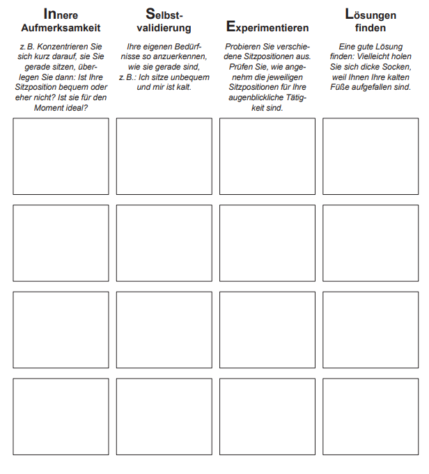
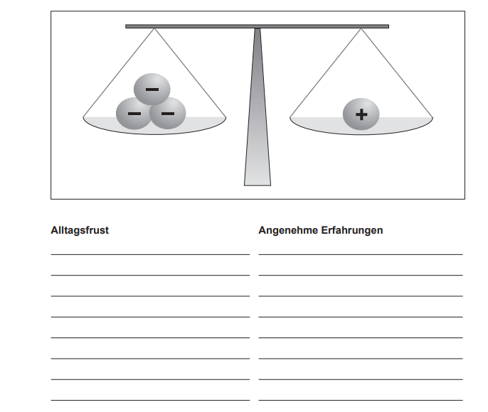
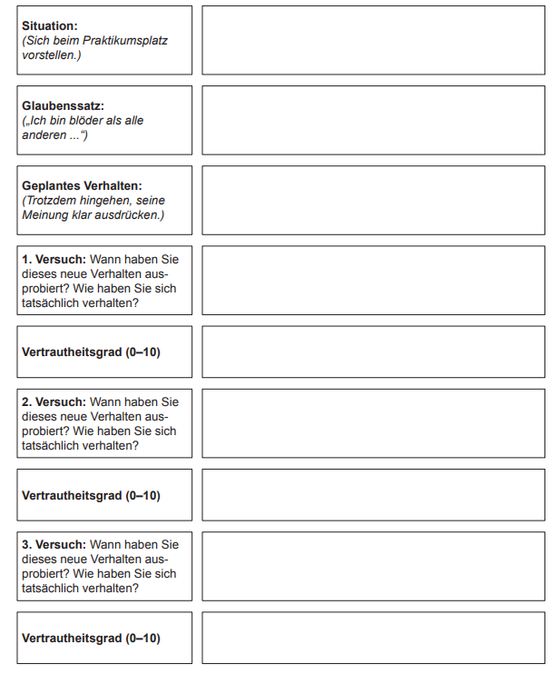

Im Selbstwertmodul möchten wir Ihnen zwei Wege vorstellen, über die eine Verbesserung des Selbstwertes erreicht werden kann:

Schon über den Selbstwert zu sprechen, kann zu großer Angst und Scham führen. Im Selbstwertmodul geht es deshalb nicht darum, von sich ein völlig positives Bild zu bekommen. Wir denken eher an …
Ab und an ist es also wichtig, dass Sie auch das Positive an der eigenen Person sehen, nicht IMMER nur das Negative.
Wollen Sie wissen, ob es für Sie Sinn macht, mit dem Modul „Selbstwert“ zu arbeiten? Hier sind 8 Aussagen, treffen diese Aussage auf Sie zu?


Diese Übung dient dazu, Ihnen zu zeigen, dass Sie oft mit unterschiedlichen Maßstäben beurteilen, wenn Sie sich selbst oder andere beurteilen.
Versuchen Sie zunächst, eine gute Freundin oder einen Bekannten zu beurteilen. Formulieren Sie jeweils zwei positive Eigenschaften
Umgang mit Mitmenschen: Locker und entspannt, macht Witze, nett, sozial, grosser Freundeskreis.
Körperliche Aspekte: Schlank, durchtrainiert, hübsch.
Beruf und Ausblidung: Psychologin, Masters.
Freizeit und Hobbys: Yoga, Kirche, Filme gucken, Grill Feste, Reisen.
Anderes: Viel unterwegs, aktiv, ständige Weiterbildung.
Und nun versuchen Sie, für jeden Bereich auch 2 positive Eigenschaften für sich zu finden:
Sehen Sie den Unterschied? Sie sollten sich und andere mit dem gleichen fairen Blick beurteilen. Das will geübt sein!
Tagesrückblick: Nehmen Sie sich abends ein paar Minuten Zeit, um zu überlegen, was Ihnen an diesem Tag gelungen ist. Das kann auch eine Kleinigkeit oder etwas Unauffälliges sein.
Ich habe neue coole Features implementiert und ein passr Bugs gefixt.
Ich habe Sport gemacht und mich bewegt.
Ich habe mich abgegrenzt und fünf Mal NEIN gesagt.
Ich habe die Skills: Held des Alltags und VEIN Aha angewendet.
Innere Aufmerksamkeit: Konzentrieren Sie sich für ein Weilchen darauf, wie Sie gerade sitzen. Und dann überlegen Sie: Ist Ihre Sitzposition bequem oder eher nicht? Ist sie für den Moment ideal?
Selbstvalidierung: Erkennen Sie Ihre Wahrnehmung so an, wie sie gerade ist.
Experimentieren: Probieren Sie verschiedene Sitzpositionen aus. Prüfen Sie, wie bequem und angenehm die jeweiligen Sitzpositionen für Ihre augenblickliche Tätigkeit sind.
eine gute Lösung finden: Eine gute Lösung finden: Vielleicht holen Sie sich dicke Socken, weil Ihnen Ihre kalten Füße aufgefallen sind.
Versuchen Sie, täglich selbst zu „inseln“, und machen Sie hier Notizen. Schauen Sie z. B. alltägliche Beschäftigungen an (z. B. beim Auto fahren, beim Warten in der Kassenschlange oder beim Telefonieren) oder konzentrieren Sie sich kurz darauf, ob Ihr Körper gerade so versorgt ist, wie er es braucht.
Wie funktioniert „Frust ausbalancieren“? Stellen Sie sich eine Waage vor und legen Sie in die linke Schale alle belastenden Ereignisse dieser Woche. Legen Sie in die rechte Schale die angenehmen Erfahrungen. Jede gute Erfahrung könnte z. B. fünf Mal so viel wiegen wie eine schlechte.
Überlegen Sie jetzt, wie Ihr Tauschverhältnis sein sollte: 1: ______
Überlegen Sie für einen Moment, wie diese Woche bisher gelaufen ist. Haben Sie den Alltagsfrust durch angenehme Erfahrungen ausbalanciert? Tragen Sie Ihre Erfahrungen unten ein.
 Gehen Sie freundlicher mit sich selbst um!Haben Sie es nicht geschafft, den Alltagsfrust durch angenehme Erfahrungen auszubalancieren, überlegen Sie, welche angenehmen Aktivitäten Sie unternehmen könnten. Was könnten Sie tun, um die Balance wieder herzustellen? Tragen Sie Ihre Ideen unten ein.
_____________________________
_____________________________
_____________________________
_____________________________
Versuchen Sie, es einfach zu machen! Denken Sie nicht lange darüber nach! Wenn Sie lange darüber nachdenken, ob Sie etwas Angenehmes tun können und nett zu sich sein möchten, setzt das wahrscheinlich Gedankenspiralen in Gang, mit denen Sie nach kurzer Zeit garantiert nicht mehr nett zu sich sein können!
Brauchen Sie Hilfe?Häufig ist es sehr schwer, mit solchen positiven Handlungen anzufangen, weil der freundliche Teil in Ihnen einfach noch zu schwach ist. Da hilft es oft, ein Symbol oder einen Fetisch zur Hand zu haben, der Sie von außen daran erinnert, dass Sie ab und zu etwas netter zu sich sein wollten. Haben Sie ein Symbol, das so eine Botschaft transportieren könnte (z. B. ein Symbol für eine positive Gottheit oder ein selbst gefertigtes Stück Kunsthandwerk)?
Ihr Symbol:___________
Alle Menschen verfügen über gewisse Grundeinstellungen zu sich selbst und der Welt: „Ich komme gut in der Welt zurecht“, oder „ich bin es wert, gemocht zu werden“, „ich kann mir Sicherheit schaffen“ … Dies nennt man Grundannahmen. Den meisten Menschen sind diese Grundannahmen nicht bewusst, sie zeigen sich aber oft in so genannten „Glaubenssätzen“. Dies wiederum sind automatische Handlungsanweisungen, die unseren Alltag und unsere Beziehung bestimmen: „Wenn Sie sich anstrengen, dann können Sie auch Leistung bringen“; „wenn jemand freundlich zu Ihnen ist, dann versuchen Sie, ihm zu vertrauen“ usw. Borderline-Patientinnen schlagen sich oft mit Grundannahmen und Glaubenssätzen herum, die aus ihren frühen Erfahrungen stammen, aber heute nicht mehr sinnvoll sind: „Ich bin es nicht wert, gemocht zu werden“; „ich bin blöd“; „ich habe es nicht verdient zu leben“; „ich bin im Kern schlecht und triebgesteuert“ usw.
Diese Grundannahmen sind wie ein Virus im Computer: Wir sehen ihn meistens nicht, aber wir merken, dass etwas schiefläuft.Warum geben Borderline-Patienten diese schwierigen Grundannahmen und Glaubenssätze nicht einfach auf? Sie bereiten doch erhebliche Probleme! Nun, das Bekannte schafft Sicherheit, das Neue bereitet Angst. Wenn wir uns entsprechend der Grundannahmen verhalten, fühlen wir uns sicher, auch wenn wir uns dabei oft schaden. Dennoch: Es zahlt sich aus, an seinen Grundannahmen und Glaubenssätzen zu arbeiten. Das heißt, zu überprüfen, ob sie heute noch zutreffend und sinnvoll sind. Die Welt hat sich verändert, Sie sind kein Kind mehr, Sie können Ihre Umgebung steuern, Sie können Ihre Partner und Freunde selbst bestimmen, Sie können schädliche Bedingungen verlassen und sich günstige Bedingungen schaffen. Der beste Ansatz zur Veränderung vom Grundannahmen und Glaubenssätzen ist zunächst, diese zu identifizieren und zu benennen. Im zweiten Schritt sollten Sie nach alternativen Gesichtspunkten suchen. Im dritten Schritt können Sie abwägen, welche Sichtweise wahrscheinlicher ist. Im vierten Schritt sollten Sie die neuen Sichtweisen testen. Das ist nicht leicht. Aber wenn Sie nichts riskieren, bleibt alles beim Alten.

Setzten Sie sich jeden Tag kurz hin, um Glaubenssätze zu protokollieren. Nur so können Sie mehr darüber lernen und verstehen, wie sie wirken.
Schauen Sie Ihr Arbeitsblatt Selbstwert 12 an und überlegen Sie, welche Glaubenssätze Sie blockieren. Nehmen Sie einen wichtigen Glaubenssatz und versuchen Sie, Wege zu finden, wie Sie gegen diesen Glaubenssatz handeln können. Tragen Sie Ihre Notizen unten ein.
